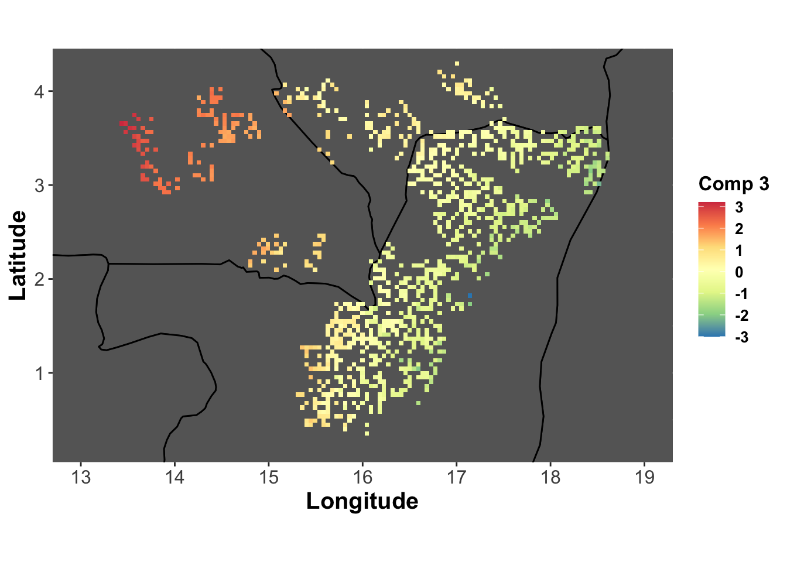
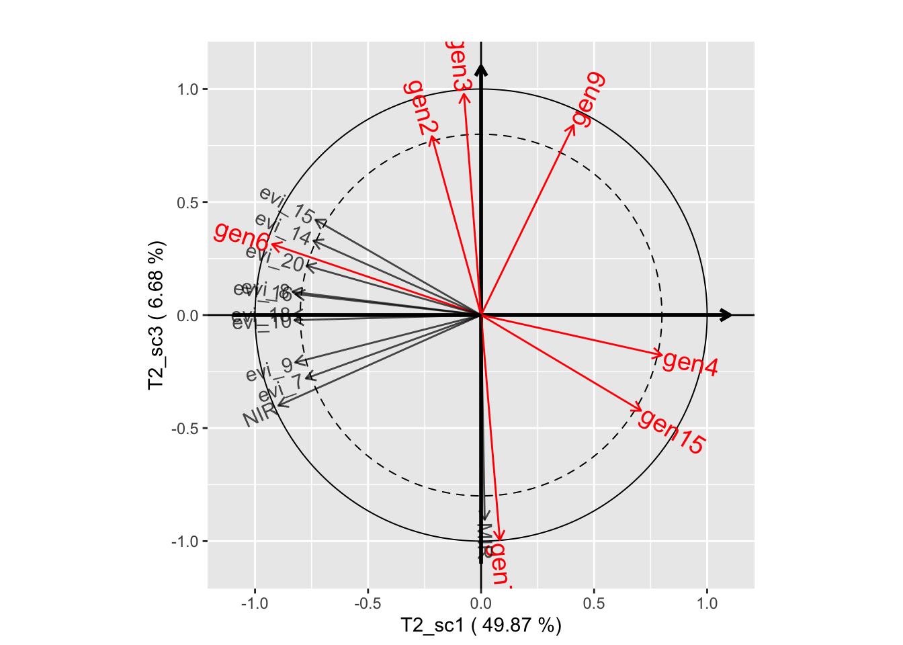

La régression linéaire généralisée sur composantes supervisées et ses extensions
F. Mortier, J. Chauvet, C. Trottier, G. Cornu, X. Bry
Initialization
Load libraries
Be sure to use latest versions.
#remotes::install_github("SCnext/SCGLR",force = TRUE)
library(SCGLR)
library(reshape2)
library(ggplot2)
library(maps)
library(future)
library(furrr)
library(progressr)Miscellaneous formatting
# unicode values for common greek letters
greeks <- list(alpha='\u03b1', tau='\u03c4', sigma='\u03c3',
beta='\u03b2', gamma='\u03b3', lambda='\u03bb', ell='\u2113')
# plot themes (ggplot)
theme_update(plot.title=element_text(hjust=0.5))
plot_theme <- theme(legend.title = element_text(size=12.5, face="bold"),
legend.text = element_text(size=10, face="bold"),
axis.title.x = element_text(size=15, face="bold"),
axis.title.y = element_text(size=15, face="bold"),
axis.text = element_text(size=12))
map_theme <- plot_theme + theme(panel.background =element_rect(fill="black"))
# get congo basin country boundaries
congobasin <- map_data("world", region=c("Central African Republic", "Cameroon",
"Republic of Congo", "Gabon",
"Democratic Republic of the Congo"))
# SCGLR plot styling
options(plot.SCGLR = list(
title = "", # No title
threshold = 0.8, # minimum correlation for being displayed (covariates & predictors)
covariates.alpha = 0.7, # covariates are slightly transparent
predictors = TRUE, # display also predictors (in red by default)
predictors.labels.size = 5
))Explanatory and additional explanatory variables
load("dat/genus2.RData")
genus <- genus2
n <- names(genus)
ny <- n[grep("^gen",n)]
nx <- n[-grep("^gen",n)]
nx <- nx[!nx %in% c("geology","surface","center_x","center_y","inventory")]
na <- c("geology")
fam <- rep("poisson",length(ny))
form <- multivariateFormula(Y=ny, X=nx, A=na, data=genus)Dataset mixedgenus (for mixedSCGLR)
# Additional explanatory variables
varaddi <- model.matrix(~factor(genus[,"geology"]))[,-1]
colnames(varaddi) <- c("geol2","geol3","geol4","geol5")
# Dataset mixedgenus
mixedgenus <- list(
Y = as.matrix(genus[, ny]),
X = as.matrix(scale(genus[, nx])),
AX = as.matrix(varaddi),
invent = as.factor(genus[, "inventory"]),
offset = matrix(rep(genus$surface,length(ny)), ncol=length(ny), byrow=FALSE))
# designXi and log(offset)
designXi <- model.matrix(~factor(mixedgenus$invent)-1)
colnames(designXi) <- paste("rand", 1:ncol(designXi), sep="")
loffset <- log(mixedgenus$offset)Division of the data into 5 folds
nfolds <- 5
set.seed(112358)
folds <- vector("list", nfolds)
random <- mixedgenus$invent
for(j in 1:length(levels(random))){
index_interest <- which(random==levels(random)[j])
permutation <- sample(index_interest, length(index_interest), replace=F)
divperm <- cut(seq(1,length(permutation)), breaks=nfolds, labels=FALSE)
for(k in 1:nfolds){
folds[[k]] <- c(folds[[k]], as.vector(permutation[divperm==k]))
}
}
folds.scglr <- rep(NA,nrow(genus))
for(i in 1:nfolds){
folds.scglr[folds[[i]]] <- i
}SCGLR
5-folds Cross-Validation for SCGLR
s <- c(0.15,0.25,0.5)
l <- c(1,2,4)
design <- expand.grid(s,l)
design <- design[order(design$Var1),]
colnames(design) <- c("s","l")
rownames(design) <- paste("design", 1:nrow(design), ": ", sep=" ")
K <- 10
# start parallel processing
plan(multisession)
rmse_scglr <- with_progress({
p <- progressor(nrow(design))
furrr::future_pmap(design, function(s,l) {
res <- try(scglrCrossVal(formula=form,
data=genus2,
family=fam,
K=K,
folds=folds.scglr,
offset=genus2$surface,
method=methodSR(l=l, s=s, epsilon=1e-6),
crit=list(maxit=100)),
silent = TRUE)
p()
res
})
})
# stop parallel processing
plan(sequential)Results of the cross-validation
rmse_scglr_geom <-
do.call(cbind, lapply(rmse_scglr, function(x) colMeans(log(x))))
rownames(rmse_scglr_geom) <- paste("H=", 0:10, sep="")
colnames(rmse_scglr_geom) <-
apply(design,1,
function(x) paste0(greeks$lambda, "=" ,x[1], ", ",
greeks$ell, "=", x[2]))
data.recap <- as.data.frame(rmse_scglr_geom)
data.recap$id <- 0:10
plot_data.recap <- melt(data.recap, id.var="id")
plot.cv.scglr <-
ggplot(plot_data.recap, aes(x=id, y=value, group=variable, colour=variable)) +
plot_theme+
geom_point() + geom_line(size=1) +
labs(x="Nombre de composantes (H)", y="Moyenne géométrique des RMSE",
color = paste0("Paramètres de \ncompromis (", greeks$lambda, ")",
"\net de localité \ndes faisceaux (", greeks$ell, ")")
) +
geom_point(aes(x=7,y=1.106440), colour="red", size=4) +
scale_x_continuous(breaks=seq(0,10,1)) +
scale_y_continuous(breaks=seq(1.1,1.4,0.05))
plot.cv.scglrComponent planes SCGLR
# Optimal parameters
tmp <- which(rmse_scglr_geom == min(rmse_scglr_geom), arr.ind=TRUE)
k_opt <- tmp[1]-1
s_opt <- unlist(design[tmp[2],])[1]
l_opt <- unlist(design[tmp[2],])[2]
# SCGLR with optimal parameters
genus.scglr <- scglr(formula=form, data=genus, family=fam, offset=genus$surface,
K=k_opt, method=methodSR(l=l_opt, s=s_opt, epsilon=1e-6),
crit=list(maxit=100))
# Component planes
plot(genus.scglr, plane=c(1,2))
plot(genus.scglr, plane=c(1,3))plot(genus.scglr, plane=c(2,3))
# SCGLR with parameters k_opt=7, s_opt=0.15, l_opt=4
genus.scglr2 <- scglr(formula=form, data=genus, family=fam, offset=genus$surface,
K=7, method=methodSR(l=4, s=0.15, epsilon=1e-6),
crit=list(maxit=100))
# Component planes
plot(genus.scglr2, plane=c(1,2))plot(genus.scglr2, plane=c(1,3))
plot(genus.scglr2, plane=c(2,3))Map components
# base map common to component maps
base_map <- ggplot(genus, aes(x=center_x, y=center_y)) +
map_theme +
labs(x="Longitude", y="Latitude") +
geom_polygon(data=congobasin,aes(x=long, y=lat, group=group), fill="grey40", color="black") +
# guides(fill=FALSE) +
coord_fixed(xlim=c(13,19), ylim=c(0.25,4.25))+
scale_x_continuous(breaks=seq(13,19,1)) +
scale_y_continuous(breaks=seq(1,4,1)) +
scale_fill_distiller(palette="Spectral")
comp1_lonlat <- base_map +
labs(fill="Comp 1") +
geom_tile(aes(fill=genus.scglr$compr[,1]))
comp1_lonlatcomp2_lonlat <- base_map +
labs(fill="Comp 2") +
geom_tile(aes(fill=genus.scglr$compr[,2]))
comp2_lonlatcomp3_lonlat <- base_map +
labs(fill="Comp 3") +
geom_tile(aes(fill=genus.scglr$compr[,3]))
comp3_lonlat
Theme SCGLR
Definition of themes
# THEME 1: Bio-physical variables
nx1 <- nx[-c(grep("^evi",nx), which(nx%in%c("MIR","NIR")))]
# THEME 2: Variables describing the photosynthetic activity
nx2 <- nx[c(grep("^evi",nx), which(nx%in%c("MIR","NIR")))] Backward selection
form_theme <- multivariateFormula(ny, nx1, nx2, A=na)
genus.thm <- scglrThemeBackward(formula=form_theme,
data=genus,
family=fam,
offset=genus$surface,
folds=folds.scglr,
H=c(6,6),
method=methodSR(l=l_opt, s=s_opt, epsilon=1e-6))## full model## Registered S3 method overwritten by 'ade4':
## method from
## print.nipals plsdepot## [6,6] = 1.11590222756032## backward## [5,6] = 1.11810941829343## [5,5] = 1.12097759015863## [5,4] = 1.12761806265981## [5,3] = 1.12408268080665## [5,2] = 1.12140570054031## [5,1] = 1.12298218717136## [5,0] = 1.13020773410829## [4,0] = 1.18149757855341## [3,0] = 1.19461850111966## [2,0] = 1.20176123644365## [1,0] = 1.25357317754074## NULL model## [0,0] = 1.41445381712297Graph of the backward selection
cv.thm <- as.matrix(genus.thm$cv_path[order(length(genus.thm$cv_path):1)])
colnames(cv.thm) <- c("theme-SCGLR")
row.names(cv.thm) <- c("0_0", "1_0","2_0","3_0","4_0","5_0",
"5_1","5_2","5_3","5_4","5_5","5_6", "6_6")
data.recap <- as.data.frame(cv.thm)
data.recap$id <- row.names(cv.thm)
plot_data.recap <- melt(data.recap,id.var="id")
plot.cv.themescglr <-
ggplot(plot_data.recap, aes(x=id, y=value, group=variable, colour=variable)) +
plot_theme+
geom_point(color='steelblue') + geom_line(color='steelblue', size=1) +
labs(x="Nombre de composantes par thème", y="Moyenne géométrique des RMSE",
color="Méthode") +
geom_point(aes(x=8,y=1.121), colour="red", size=4) +
scale_y_continuous(limits=c(1.1,1.42), breaks=seq(1.1,1.4,0.1))
plot.cv.themescglrComponent planes THEME-SCGLR
# THEME-SCGLR with optimal parameters
genus.thm <- scglrTheme(formula=form_theme, data=genus, family=fam,
offset=genus$surface,
H=c(5,3),
method=methodSR(l=l_opt, s=s_opt, epsilon=1e-6))
# Component planes (THEME 1)
plot(genus.thm$themes[[1]], plane=c(1,2))plot(genus.thm$themes[[1]], plane=c(1,3))plot(genus.thm$themes[[1]], plane=c(2,3))# Component planes (THEME 2)
plot(genus.thm$themes[[2]], plane=c(1,2))plot(genus.thm$themes[[2]], plane=c(1,3))
plot(genus.thm$themes[[2]], plane=c(2,3))Mixed SCGLR
Parameter grid for the 5-folds cross-validation
val_k <- 1:10
val_s <- c(0.15)
val_l <- c(4)
for_k <- rep(val_k, each=length(val_s)*length(val_l))
for_s <- rep( rep(val_s, each=length(val_l)), length(val_k) )
for_l <- rep(val_l, length(val_s)*length(val_k))
par_ksl <- cbind(for_k, for_s, for_l)5-folds CROSS-VALIDATION (parallel computing)
# start parallel processing
plan(multisession)
error.CV <- lapply(seq(nfolds), function(i) {
cat("Fold ", i, sep="")
cat("\n")
cal <- (1:nrow(mixedgenus$Y))[ -folds[[i]] ]
val <- folds[[i]]
Y_cal <- as.matrix(mixedgenus$Y[cal,])
X_cal <- as.matrix(mixedgenus$X[cal,])
AX_cal <- as.matrix(mixedgenus$AX[cal,])
designXi_cal <- as.matrix(designXi[cal,])
loffset_cal <- as.matrix(loffset[cal,])
random_cal <- random[cal]
Y_val <- mixedgenus$Y[val,]
X_val <- mixedgenus$X[val,]
AX_val <- mixedgenus$AX[val,]
designXi_val <- designXi[val,]
loffset_val <- loffset[val,]
nbtriplet <- nrow(par_ksl)
BigMatrice <- furrr::future_map(1:nbtriplet, function(jj) {
tryCatch({
tmp <- kCompRand(Y=Y_cal, X=X_cal, AX=AX_cal,
random=random_cal, loffset=loffset_cal,
family=rep("poisson",ncol(mixedgenus$Y)),
init.sigma=rep(1,ncol(mixedgenus$Y)),
init.comp="pca",
k=as.numeric(par_ksl[jj,1]),
method=methodSR("vpi",
s=as.numeric(par_ksl[jj,2]),
l=as.numeric(par_ksl[jj,3]),
maxiter=1000,
epsilon=10^-6, bailout=1000))
xnew <- cbind(1, X_val, AX_val, as.matrix(designXi_val))
betanew <- as.matrix(rbind(as.matrix(tmp$beta),
as.matrix(tmp$blup)))
pred <- SCGLR:::multivariatePredictGlm(
Xnew=xnew,
family=rep("poisson",ncol(mixedgenus$Y)),
beta=betanew,
offset=exp(loffset_val)
)
tmperror <- colMeans((Y_val-pred)^2/pred)
return(c(tmperror))
}, error = function(e) {
return(NULL) # drop triplet in case of error
})
})
do.call(cbind, BigMatrice)
})## Fold 1
## Fold 2
## Fold 3
## Fold 4
## Fold 5# stop parallel processing
plan(sequential)
# ATTENTION marche pas s'il y a eu une erreur car les dimensions ne seront plus les mêmes !
recap.error.CV <- Reduce("+", error.CV, init=0)/nfolds
colnames(recap.error.CV) <- paste("tripletPAR", 1:nrow(par_ksl), sep="")
moy.geom.err <- apply(recap.error.CV, 2, function(x) mean(log(x)))Results of the cross-validation (SCGLR vs MIXED-SCGLR)
par_ksl.err <- cbind(par_ksl, moy.geom.err)
select.s <- val_s
select.l <- val_l
mat.select <-
par_ksl.err[(par_ksl.err[,2]%in%select.s) & (par_ksl.err[,3]%in%select.l),]
matrix.recap <- matrix(NA, length(select.s)*length(select.l), length(val_k))
for(k in val_k){
matrix.recap[,k] <- mat.select[mat.select[,1]==k, 4]
}
matrix.recap <- rbind(matrix.recap, rmse_scglr_geom[2:11,3])
row.names(matrix.recap) <- c("mixedSCGLR", "SCGLR")
colnames(matrix.recap) <- paste("H=", val_k, sep="")
data.recap <- as.data.frame(t(matrix.recap))
data.recap$id <- val_k
plot_data.recap <- melt(data.recap, id.var="id")
plot.cv.mixedscglr <-
ggplot(plot_data.recap, aes(x=id, y=value, group=variable, colour=variable)) +
plot_theme+
geom_point() + geom_line(size=1) +
labs(x="Nombre de composantes (H)", y="Moyenne géométrique des RMSE",
color="Méthode") +
scale_x_continuous(breaks=seq(1,10, by=1))
plot.cv.mixedscglrComponent planes MIXED-SCGLR
optimal.triplet <- par_ksl.err[which.min(par_ksl.err[,4]), -4]
k.opt <- optimal.triplet[1]
s.opt <- optimal.triplet[2]
l.opt <- optimal.triplet[3]
withRandom.opt <-
kCompRand(Y=mixedgenus$Y, X=mixedgenus$X, AX=mixedgenus$AX,
family=rep("poisson", ncol(mixedgenus$Y)),
random=mixedgenus$invent, loffset=log(mixedgenus$offset),
init.sigma=rep(1, ncol(mixedgenus$Y)), init.comp="pca",
k=k.opt, method=SCGLR::methodSR("vpi", l=l.opt, s=s.opt,
maxiter=1000, epsilon=10^-6,
bailout=1000))
plot(withRandom.opt, plane=c(1,2))
plot(withRandom.opt, plane=c(1,3))plot(withRandom.opt, plane=c(2,3))
withRandom.opt2 <-
kCompRand(Y=mixedgenus$Y, X=mixedgenus$X, AX=mixedgenus$AX,
family=rep("poisson", ncol(mixedgenus$Y)),
random=mixedgenus$invent, loffset=log(mixedgenus$offset),
init.sigma=rep(1, ncol(mixedgenus$Y)), init.comp="pca",
k=3, method=SCGLR::methodSR("vpi", l=4, s=0.15,
maxiter=1000, epsilon=10^-6,
bailout=1000))
plot(withRandom.opt2, plane=c(1,2))plot(withRandom.opt2, plane=c(1,3))
plot(withRandom.opt2, plane=c(2,3))Spearman correlations
SCGLR
pred.scglr <- matrix(0, nrow(genus), length(ny))
plots <- 1:nrow(genus)
for (i in 1:5) {
print(paste(i, "/", 5))
plots_val <- plots[folds.scglr == i]
plots_cal <- plots[folds.scglr != i]
genus.scglr2 <- scglr(form, data=genus, family=fam, offset=genus$surface,
subset=plots_cal,
K=7,
method=methodSR(l=4, s=0.15, bailout=100,
maxiter=100, epsilon=1e-6))
## Validation matrix
x_new <- model.matrix(form, data=genus[plots_val,], rhs=1:length(form)[2])
## Predicting abundances on validation dataset
pred.scglr[plots_val,] <-
multivariatePredictGlm(x_new, family=fam, beta=as.matrix(genus.scglr2$beta),
offset=genus$surface[plots_val])
}## [1] "1 / 5"
## [1] "2 / 5"
## [1] "3 / 5"
## [1] "4 / 5"
## [1] "5 / 5"res.scglr <- diag(cor(pred.scglr, genus[,ny], method="spearman"))MIXED-SCGLR
pred.mixedscglr <- matrix(0, nrow(genus), length(ny))
plots <- 1:nrow(genus)
for (i in 1:5) {
print(paste(i, "/", 5))
plots_val <- plots[folds[[i]]]
plots_cal <- plots[-folds[[i]]]
fit.mixedscglr <-
kCompRand(Y=mixedgenus$Y[plots_cal,],
family=rep("poisson", ncol(mixedgenus$Y)),
X=mixedgenus$X[plots_cal,], AX=mixedgenus$AX[plots_cal,],
random=random[plots_cal], loffset=loffset[plots_cal,],
init.sigma=rep(1,ncol(mixedgenus$Y)), init.comp="pca",
k=3,method=methodSR("vpi", s=0.15, l=4, maxiter=1000,
epsilon=10^-6, bailout=1000))
## Validation matrix
xnew.mixed <- cbind(1, mixedgenus$X[plots_val,], mixedgenus$AX[plots_val,],
as.matrix(designXi[plots_val,]))
## Predicting abundances on validation dataset
betanew.mixed <- as.matrix(rbind(as.matrix(fit.mixedscglr$beta),
as.matrix(fit.mixedscglr$blup)))
pred.mixedscglr[plots_val,] <-
SCGLR:::multivariatePredictGlm(Xnew=xnew.mixed ,
family=rep("poisson",ncol(mixedgenus$Y)),
beta=betanew.mixed,
offset=exp(loffset[plots_val,]))
}## [1] "1 / 5"
## [1] "2 / 5"
## [1] "3 / 5"
## [1] "4 / 5"
## [1] "5 / 5"res.mixedscglr <- diag(cor(pred.mixedscglr, genus[,ny], method="spearman"))
spearman <- round(cbind(res.scglr, res.mixedscglr), 2)
row.names(spearman) <- paste0("gen",seq_len(nrow(spearman)))
spearman## res.scglr res.mixedscglr
## gen1 0.65 0.69
## gen2 0.64 0.69
## gen3 0.60 0.61
## gen4 0.49 0.52
## gen5 0.39 0.44
## gen6 0.44 0.46
## gen7 0.61 0.68
## gen8 0.63 0.65
## gen9 0.85 0.87
## gen10 0.63 0.63
## gen11 0.62 0.69
## gen12 0.58 0.60
## gen13 0.52 0.56
## gen14 0.73 0.75
## gen15 0.51 0.56Abundance maps
Data
data <- data.frame(y=genus$gen9,
predscglr=pred.scglr[,9],
predmixed=pred.mixedscglr[,9])
data$long <- genus$center_x
data$lat <- genus$center_y
# base map
lim <- 100
base_map <- ggplot(data,aes(x=long,y=lat)) +
map_theme+
labs(x="Longitude",y="Latitude")+
geom_polygon(data=congobasin,aes(x=long, y=lat, group=group), fill="grey40", color="black") +
coord_fixed(xlim=c(13,19), ylim=c(0.25,4.25))+
scale_x_continuous(breaks=seq(13,19,1)) +
scale_y_continuous(breaks=seq(1,4,1)) +
scale_fill_gradientn(colours=terrain.colors(10),
values=(1-log(c(1:100))/max(log(c(1:100)))),
limits=c(0,lim))Observed abundance
real.abundance <-
base_map + labs(fill="Vraie\nabondance") +
geom_tile(aes(fill=y))
real.abundancePredictions - SCGLR
pred.abundance.scglr <-
base_map + labs(fill="Prédictions\nSCGLR") +
geom_tile(aes(fill=predscglr))
pred.abundance.scglrPredictions - mixedSCGLR
pred.abundance.mixedscglr <-
base_map + labs(fill="Prédictions\nmixed-SCGLR") +
geom_tile(aes(fill=predmixed))
pred.abundance.mixedscglr